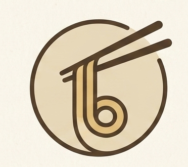

嗦语 · 像嗦面一样把烦恼嗦走
把那些堵在心里的硬面条，慢慢嗦出来
今天，你希望以什么方式被陪伴？ 你可以自由选择，也可以随时切换。
⚠️ 嗦语不能替代专业心理咨询或医疗诊断
如遇紧急情况，请立即拨打 全国心理援助热线 400-161-9995 （24小时）
继续使用即表示同意：嗦语会匿名记录对话用于产品优化， 不收集姓名、IP等任何身份信息。
抱歉，当前阶段我们的人工咨询师还在筹备中。 如需立即获得专业帮助，请：
📞 推荐联系：
全国心理援助热线：400-161-9995
北京心理危机干预中心：010-82951332
希望24热线：400-161-9995
慢慢看，不着急。
躺下后脑子停不下来时，试试"4-7-8呼吸法"： 吸气4秒 → 屏住7秒 → 呼气8秒。重复3-4次。
试试"5-4-3-2-1"感官练习： 说出你看到的5样东西、听到的4种声音、能摸到的3样物品、闻到的2种气味、尝到的1种味道。
把脑子里的负面想法写下来。 然后问自己：如果是朋友跟我说这句话，我会怎么回应TA？
请立即拨打： 400-161-9995（全国心理援助热线·24小时）